Nigerian cuisine consists of dishes or food items from the hundreds of Native African ethnic groups that comprise Nigeria.
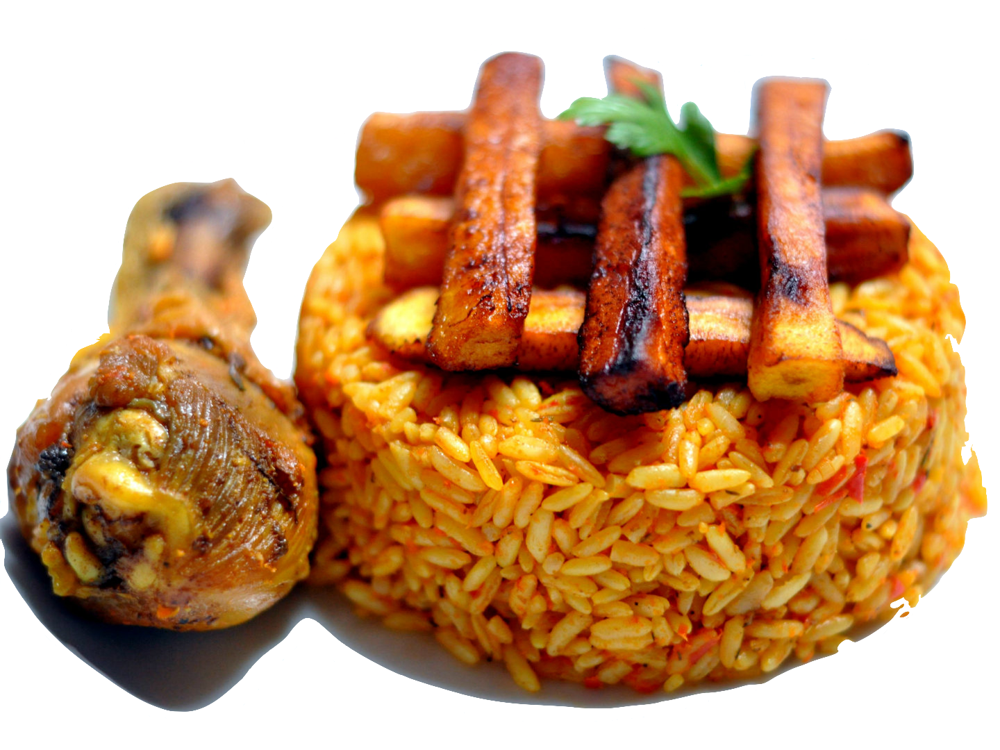
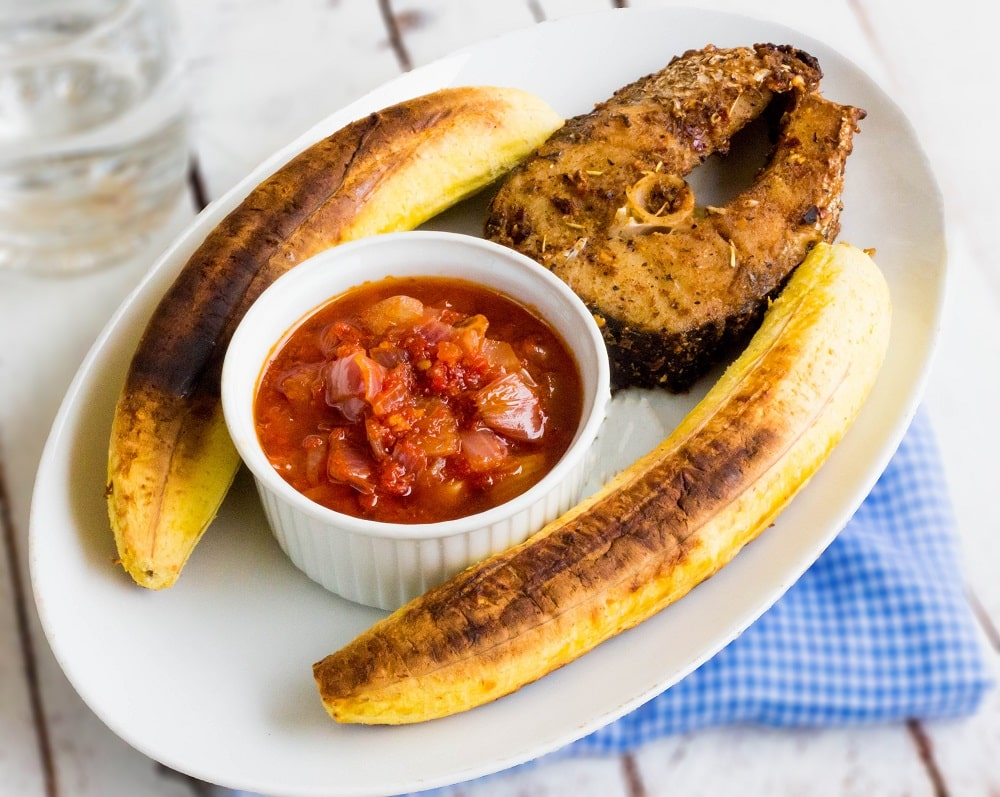
Boli
Boil is roasted plantains, either ripe or unripe.Boli contains a lot of fiber, antioxidants, iron, potassium, protein, and vitamins A, B, and C, among other nutrients.
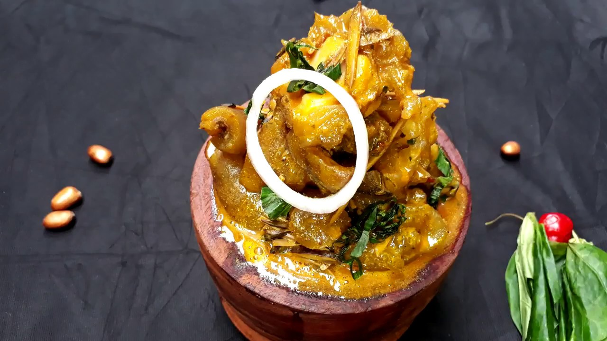
Isi Ewu
Isi ewu, goat head in spicy sauce is a delicacy from Igboland of Eastern Nigeria. Similar to Nkwobi (cow foot in spicy sauce) and Homework (goat foot in spicy sauce), it is more flavoursome because of the addition of the fatty brain of the goat.
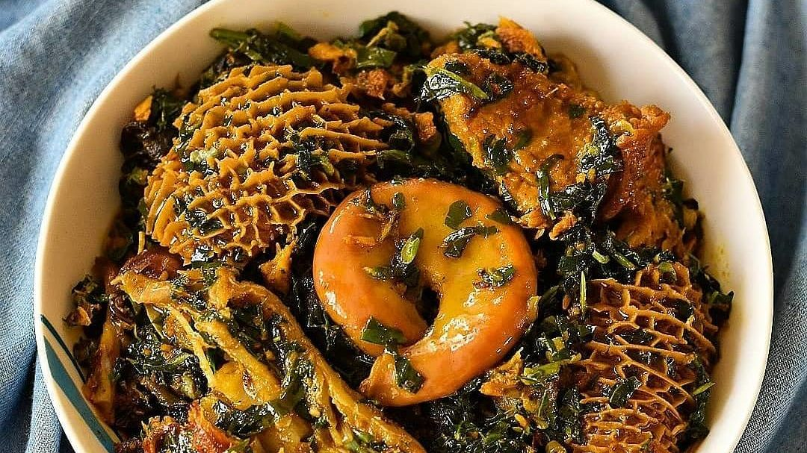
Edika Ikong
Edikang Ikong soup is very nutritious and this is very much so. Prepared with a generous quantity of pumpkin leaves and water leaves, this Nigerian soup recipe is nourishing in every sense of the word.
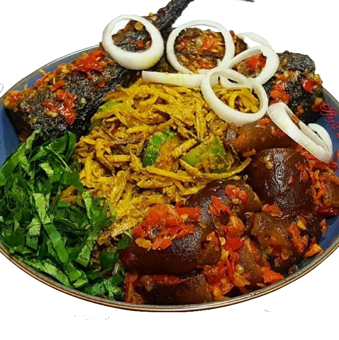
Why People Choose Us?
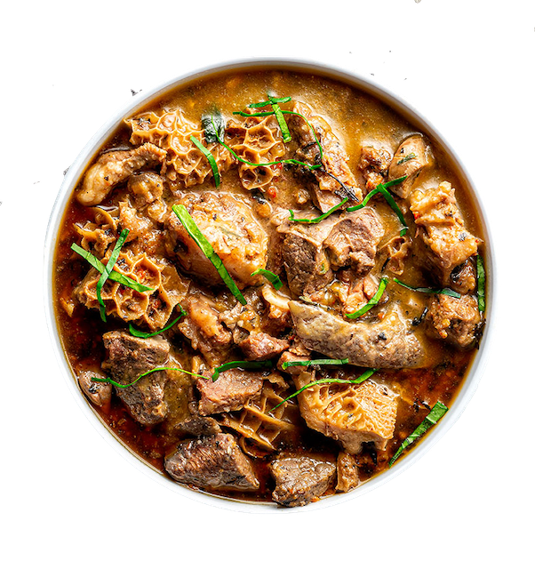
Choose your favourite
Traditional Nigerian cuisine consists of more than 250 dishes from different ethnic groups. Their cuisine traditionally consists of rice, potatoes, chicken, couscous, and grills.
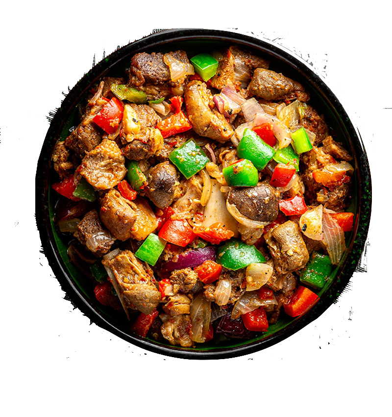
Choose your favourite
Peppered Goat Meat, commonly known as Asun in Nigeria, is a finger-licking, lip-smacking combination of roasted goat meat sautéed in spicy habanero and red bell peppers, that is so delicious, you'll almost be tempted to eat it all in one sitting!
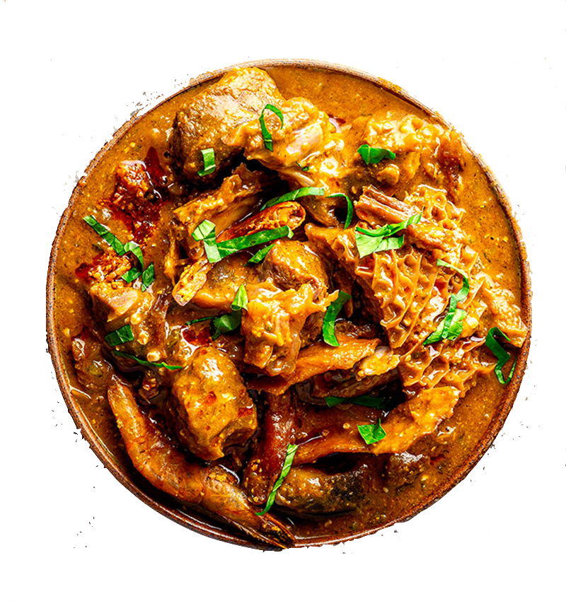
Choose your favourite
Ogbono soup is a Nigerian dish made with ground dry ogbono seeds. Ogbono seeds are originated and were first grown in Southern Nigeria with considerable local variation. .
Our Popular Food Items
Nigerian cuisine is rich with unique recipes and in the way the food is prepared. For example, it's a well-known fact that Jollof rice tastes better as a leftover. Unfortunately, few people in the Western world have experienced authentic Nigerian food. Food in Nigeria is aromatic, delicious, and always made straight from the heart.
If you're heading over to Nigeria, there are traditional dishes you have to try during your visit. Check out the local menus as you explore nearby bukas (casual Nigerian restaurants).
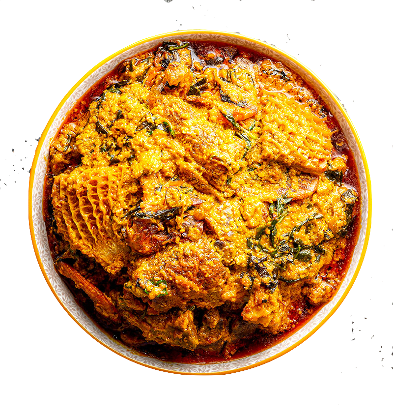
Egusi Soup
Egusi Soup (also known as Egusi Stew) is a rich and savory West African soup made with ground melon seeds and eaten with fufu dishes. It is an amazing soup the whole family will enjoy!
EUR 7.50
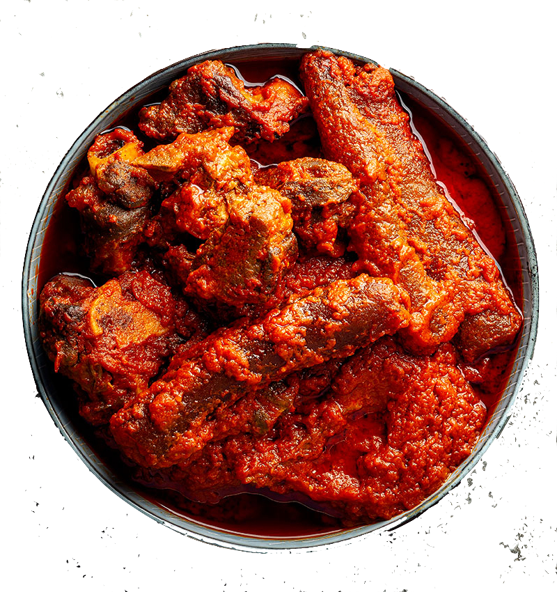
Assorted Meat & Kpomo Stew
A medley of beef, beef reed (abodi), goat meat, tripe & ponmo cooked with specially crafted tomato & pepper sauce rich in flavour that leaves you wanting more and more Spice Level - 4
EUR 15.20
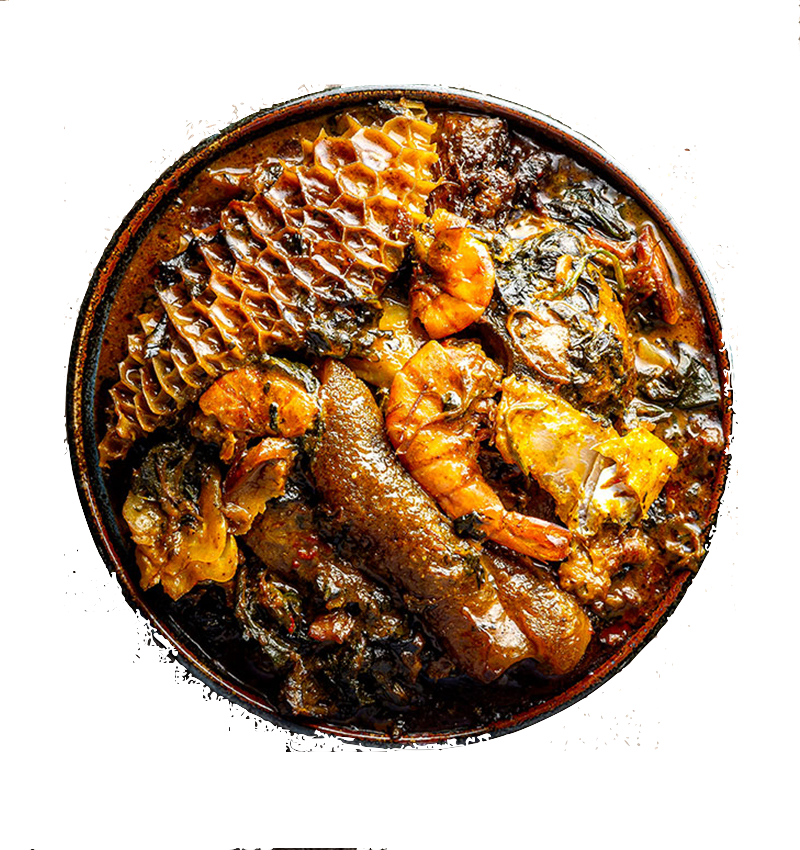
Bitterleaf Soup
Delicious Bitterleaf Soup(Ofe Onugbu) Delicious and Bitter don't sound right together Right? I know but this soup is one that makes the two words work together Trust me.
EUR 13.95
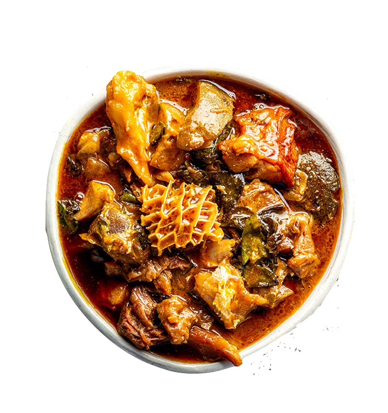
Oha Soup
This is a tasty and simple soup that will turn out delicious no matter how it is prepared. It is a soup recipe that originates from Nigeria's eastern region. It's one of those traditional Igbo soups that you'll always relish.
EUR 10.00
Customer Feedback
Excellent! This is the 2nd time I've made this dish. This time I chose to cook in my instant pot. I sautéed the meat, peppers and onions in the pot and then added the rest of the ingredients, plus a little bit of water. Came out really good! The meat was very tender, but you do miss out a little bit on the meat being roasted. Thank you for this great recipe!